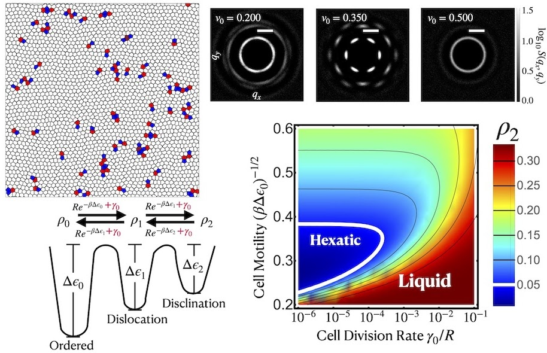

Order from Chaos: How Cell Division and Motility Sculpt Tissue Structure
In collaboration with Prof. Mark Bowick (KITP/UCSB) and the Velia Fowler Lab (Univ. of Delaware)
Hexagonal packing is a recurring motif in epithelial tissues, and understanding how it arises — and breaks down — requires both theoretical and experimental perspectives. On the theory side, we show that cell division and motility together can drive a liquid→hexatic→liquid transformation in tissues, with hexatic order emerging from a delicate competition between dislocation defects generated by division and disclination-antidisclination binding driven by motility. On the experimental side, work on mouse ocular lens epithelial cells reveals how this kind of ordered packing is actively maintained at the molecular level: nonmuscle myosin IIA (NMIIA) generates anisotropic junctional tension — concentrated along anterior-posterior cell edges — that is essential for stable hexagonal packing during differentiation. A rod domain mutation in NMIIA (E1841K) that disrupts bipolar filament assembly wipes out this tension anisotropy, leading to disordered cell arrangements. Together, these studies paint a coherent picture in which hexatic and hexagonal order in tissues is neither passive nor accidental, but shaped by the interplay of active mechanical forces, topological defects, and cytoskeletal regulation.

- Tang, Y., et al. “Cell Division and Motility Enable Hexatic Order in Biological Tissues.” Physical Review Letters 132.21 (2024): 218402. DOI
- Islam, S.T., Tang, Y., Boliver, H., Bi, D., & Fowler, V.M. “Non-muscle Myosin IIA (NMIIA) regulates anisotropic cell tension to maintain the hexagonal packing of mouse lens meridional row cells.” Molecular Biology of the Cell (2025). DOI